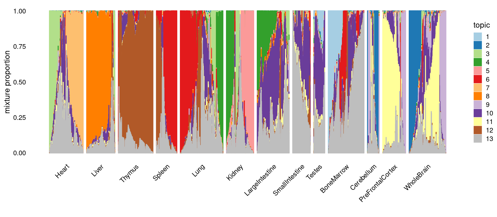
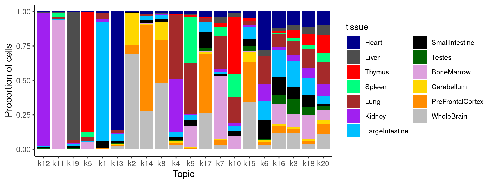
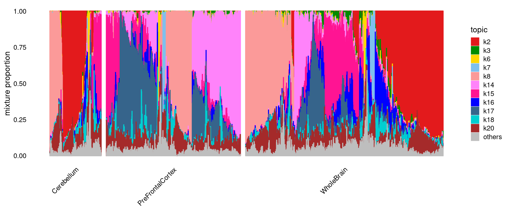
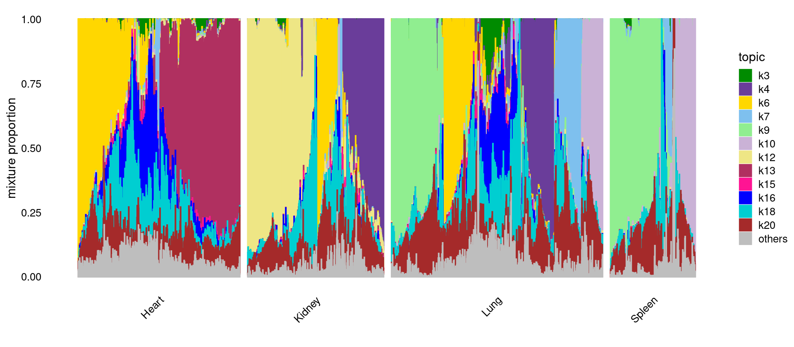

Compare results from different number of topics (k) in Cusanovich2018 data
Kaixuan Luo
Last updated: 2021-02-26
Checks: 7 0
Knit directory: scATACseq-topics/
This reproducible R Markdown analysis was created with workflowr (version 1.6.2). The Checks tab describes the reproducibility checks that were applied when the results were created. The Past versions tab lists the development history.
Great! Since the R Markdown file has been committed to the Git repository, you know the exact version of the code that produced these results.
Great job! The global environment was empty. Objects defined in the global environment can affect the analysis in your R Markdown file in unknown ways. For reproduciblity it's best to always run the code in an empty environment.
The command set.seed(20200729) was run prior to running the code in the R Markdown file. Setting a seed ensures that any results that rely on randomness, e.g. subsampling or permutations, are reproducible.
Great job! Recording the operating system, R version, and package versions is critical for reproducibility.
Nice! There were no cached chunks for this analysis, so you can be confident that you successfully produced the results during this run.
Great job! Using relative paths to the files within your workflowr project makes it easier to run your code on other machines.
Great! You are using Git for version control. Tracking code development and connecting the code version to the results is critical for reproducibility.
The results in this page were generated with repository version 7d7de43. See the Past versions tab to see a history of the changes made to the R Markdown and HTML files.
Note that you need to be careful to ensure that all relevant files for the analysis have been committed to Git prior to generating the results (you can use wflow_publish or wflow_git_commit). workflowr only checks the R Markdown file, but you know if there are other scripts or data files that it depends on. Below is the status of the Git repository when the results were generated:
Ignored files:
Ignored: .Rhistory
Ignored: .Rproj.user/
Ignored: output/plotly/Buenrostro_2018_Chen2019pipeline/
Untracked files:
Untracked: analysis/process_data_Buenrostro2018_Chen2019.Rmd
Untracked: output/clustering-Cusanovich2018.rds
Untracked: output/plotly/Cusanovich2018/gsea_topic_10_genebody-sum_files/crosstalk-1.1.1/
Untracked: output/plotly/Cusanovich2018/gsea_topic_10_genebody-sum_files/jquery-3.5.1/
Untracked: output/plotly/Cusanovich2018/gsea_topic_10_genebody-sum_files/plotly-binding-4.9.3/
Untracked: output/plotly/Cusanovich2018/gsea_topic_10_genebody-sum_files/plotly-htmlwidgets-css-1.57.1/
Untracked: output/plotly/Cusanovich2018/gsea_topic_10_genebody-sum_files/plotly-main-1.57.1/
Untracked: output/plotly/Cusanovich2018/gsea_topic_10_tss-sum_files/crosstalk-1.1.1/
Untracked: output/plotly/Cusanovich2018/gsea_topic_10_tss-sum_files/jquery-3.5.1/
Untracked: output/plotly/Cusanovich2018/gsea_topic_10_tss-sum_files/plotly-binding-4.9.3/
Untracked: output/plotly/Cusanovich2018/gsea_topic_10_tss-sum_files/plotly-htmlwidgets-css-1.57.1/
Untracked: output/plotly/Cusanovich2018/gsea_topic_10_tss-sum_files/plotly-main-1.57.1/
Untracked: output/plotly/Cusanovich2018/gsea_topic_11_genebody-sum_files/crosstalk-1.1.1/
Untracked: output/plotly/Cusanovich2018/gsea_topic_11_genebody-sum_files/jquery-3.5.1/
Untracked: output/plotly/Cusanovich2018/gsea_topic_11_genebody-sum_files/plotly-binding-4.9.3/
Untracked: output/plotly/Cusanovich2018/gsea_topic_11_genebody-sum_files/plotly-htmlwidgets-css-1.57.1/
Untracked: output/plotly/Cusanovich2018/gsea_topic_11_genebody-sum_files/plotly-main-1.57.1/
Untracked: output/plotly/Cusanovich2018/gsea_topic_11_tss-sum_files/crosstalk-1.1.1/
Untracked: output/plotly/Cusanovich2018/gsea_topic_11_tss-sum_files/jquery-3.5.1/
Untracked: output/plotly/Cusanovich2018/gsea_topic_11_tss-sum_files/plotly-binding-4.9.3/
Untracked: output/plotly/Cusanovich2018/gsea_topic_11_tss-sum_files/plotly-htmlwidgets-css-1.57.1/
Untracked: output/plotly/Cusanovich2018/gsea_topic_11_tss-sum_files/plotly-main-1.57.1/
Untracked: output/plotly/Cusanovich2018/gsea_topic_12_genebody-sum_files/crosstalk-1.1.1/
Untracked: output/plotly/Cusanovich2018/gsea_topic_12_genebody-sum_files/jquery-3.5.1/
Untracked: output/plotly/Cusanovich2018/gsea_topic_12_genebody-sum_files/plotly-binding-4.9.3/
Untracked: output/plotly/Cusanovich2018/gsea_topic_12_genebody-sum_files/plotly-htmlwidgets-css-1.57.1/
Untracked: output/plotly/Cusanovich2018/gsea_topic_12_genebody-sum_files/plotly-main-1.57.1/
Untracked: output/plotly/Cusanovich2018/gsea_topic_12_tss-sum_files/crosstalk-1.1.1/
Untracked: output/plotly/Cusanovich2018/gsea_topic_12_tss-sum_files/jquery-3.5.1/
Untracked: output/plotly/Cusanovich2018/gsea_topic_12_tss-sum_files/plotly-binding-4.9.3/
Untracked: output/plotly/Cusanovich2018/gsea_topic_12_tss-sum_files/plotly-htmlwidgets-css-1.57.1/
Untracked: output/plotly/Cusanovich2018/gsea_topic_12_tss-sum_files/plotly-main-1.57.1/
Untracked: output/plotly/Cusanovich2018/gsea_topic_13_genebody-sum_files/crosstalk-1.1.1/
Untracked: output/plotly/Cusanovich2018/gsea_topic_13_genebody-sum_files/jquery-3.5.1/
Untracked: output/plotly/Cusanovich2018/gsea_topic_13_genebody-sum_files/plotly-binding-4.9.3/
Untracked: output/plotly/Cusanovich2018/gsea_topic_13_genebody-sum_files/plotly-htmlwidgets-css-1.57.1/
Untracked: output/plotly/Cusanovich2018/gsea_topic_13_genebody-sum_files/plotly-main-1.57.1/
Untracked: output/plotly/Cusanovich2018/gsea_topic_13_tss-sum_files/crosstalk-1.1.1/
Untracked: output/plotly/Cusanovich2018/gsea_topic_13_tss-sum_files/jquery-3.5.1/
Untracked: output/plotly/Cusanovich2018/gsea_topic_13_tss-sum_files/plotly-binding-4.9.3/
Untracked: output/plotly/Cusanovich2018/gsea_topic_13_tss-sum_files/plotly-htmlwidgets-css-1.57.1/
Untracked: output/plotly/Cusanovich2018/gsea_topic_13_tss-sum_files/plotly-main-1.57.1/
Untracked: output/plotly/Cusanovich2018/gsea_topic_1_genebody-sum_files/crosstalk-1.1.1/
Untracked: output/plotly/Cusanovich2018/gsea_topic_1_genebody-sum_files/jquery-3.5.1/
Untracked: output/plotly/Cusanovich2018/gsea_topic_1_genebody-sum_files/plotly-binding-4.9.3/
Untracked: output/plotly/Cusanovich2018/gsea_topic_1_genebody-sum_files/plotly-htmlwidgets-css-1.57.1/
Untracked: output/plotly/Cusanovich2018/gsea_topic_1_genebody-sum_files/plotly-main-1.57.1/
Untracked: output/plotly/Cusanovich2018/gsea_topic_1_tss-sum_files/crosstalk-1.1.1/
Untracked: output/plotly/Cusanovich2018/gsea_topic_1_tss-sum_files/jquery-3.5.1/
Untracked: output/plotly/Cusanovich2018/gsea_topic_1_tss-sum_files/plotly-binding-4.9.3/
Untracked: output/plotly/Cusanovich2018/gsea_topic_1_tss-sum_files/plotly-htmlwidgets-css-1.57.1/
Untracked: output/plotly/Cusanovich2018/gsea_topic_1_tss-sum_files/plotly-main-1.57.1/
Untracked: output/plotly/Cusanovich2018/gsea_topic_2_genebody-sum_files/crosstalk-1.1.1/
Untracked: output/plotly/Cusanovich2018/gsea_topic_2_genebody-sum_files/jquery-3.5.1/
Untracked: output/plotly/Cusanovich2018/gsea_topic_2_genebody-sum_files/plotly-binding-4.9.3/
Untracked: output/plotly/Cusanovich2018/gsea_topic_2_genebody-sum_files/plotly-htmlwidgets-css-1.57.1/
Untracked: output/plotly/Cusanovich2018/gsea_topic_2_genebody-sum_files/plotly-main-1.57.1/
Untracked: output/plotly/Cusanovich2018/gsea_topic_2_tss-sum_files/crosstalk-1.1.1/
Untracked: output/plotly/Cusanovich2018/gsea_topic_2_tss-sum_files/jquery-3.5.1/
Untracked: output/plotly/Cusanovich2018/gsea_topic_2_tss-sum_files/plotly-binding-4.9.3/
Untracked: output/plotly/Cusanovich2018/gsea_topic_2_tss-sum_files/plotly-htmlwidgets-css-1.57.1/
Untracked: output/plotly/Cusanovich2018/gsea_topic_2_tss-sum_files/plotly-main-1.57.1/
Untracked: output/plotly/Cusanovich2018/gsea_topic_3_genebody-sum_files/crosstalk-1.1.1/
Untracked: output/plotly/Cusanovich2018/gsea_topic_3_genebody-sum_files/jquery-3.5.1/
Untracked: output/plotly/Cusanovich2018/gsea_topic_3_genebody-sum_files/plotly-binding-4.9.3/
Untracked: output/plotly/Cusanovich2018/gsea_topic_3_genebody-sum_files/plotly-htmlwidgets-css-1.57.1/
Untracked: output/plotly/Cusanovich2018/gsea_topic_3_genebody-sum_files/plotly-main-1.57.1/
Untracked: output/plotly/Cusanovich2018/gsea_topic_3_tss-sum_files/crosstalk-1.1.1/
Untracked: output/plotly/Cusanovich2018/gsea_topic_3_tss-sum_files/jquery-3.5.1/
Untracked: output/plotly/Cusanovich2018/gsea_topic_3_tss-sum_files/plotly-binding-4.9.3/
Untracked: output/plotly/Cusanovich2018/gsea_topic_3_tss-sum_files/plotly-htmlwidgets-css-1.57.1/
Untracked: output/plotly/Cusanovich2018/gsea_topic_3_tss-sum_files/plotly-main-1.57.1/
Untracked: output/plotly/Cusanovich2018/gsea_topic_4_genebody-sum_files/crosstalk-1.1.1/
Untracked: output/plotly/Cusanovich2018/gsea_topic_4_genebody-sum_files/jquery-3.5.1/
Untracked: output/plotly/Cusanovich2018/gsea_topic_4_genebody-sum_files/plotly-binding-4.9.3/
Untracked: output/plotly/Cusanovich2018/gsea_topic_4_genebody-sum_files/plotly-htmlwidgets-css-1.57.1/
Untracked: output/plotly/Cusanovich2018/gsea_topic_4_genebody-sum_files/plotly-main-1.57.1/
Untracked: output/plotly/Cusanovich2018/gsea_topic_4_tss-sum_files/crosstalk-1.1.1/
Untracked: output/plotly/Cusanovich2018/gsea_topic_4_tss-sum_files/jquery-3.5.1/
Untracked: output/plotly/Cusanovich2018/gsea_topic_4_tss-sum_files/plotly-binding-4.9.3/
Untracked: output/plotly/Cusanovich2018/gsea_topic_4_tss-sum_files/plotly-htmlwidgets-css-1.57.1/
Untracked: output/plotly/Cusanovich2018/gsea_topic_4_tss-sum_files/plotly-main-1.57.1/
Untracked: output/plotly/Cusanovich2018/gsea_topic_5_genebody-sum_files/crosstalk-1.1.1/
Untracked: output/plotly/Cusanovich2018/gsea_topic_5_genebody-sum_files/jquery-3.5.1/
Untracked: output/plotly/Cusanovich2018/gsea_topic_5_genebody-sum_files/plotly-binding-4.9.3/
Untracked: output/plotly/Cusanovich2018/gsea_topic_5_genebody-sum_files/plotly-htmlwidgets-css-1.57.1/
Untracked: output/plotly/Cusanovich2018/gsea_topic_5_genebody-sum_files/plotly-main-1.57.1/
Untracked: output/plotly/Cusanovich2018/gsea_topic_5_tss-sum_files/crosstalk-1.1.1/
Untracked: output/plotly/Cusanovich2018/gsea_topic_5_tss-sum_files/jquery-3.5.1/
Untracked: output/plotly/Cusanovich2018/gsea_topic_5_tss-sum_files/plotly-binding-4.9.3/
Untracked: output/plotly/Cusanovich2018/gsea_topic_5_tss-sum_files/plotly-htmlwidgets-css-1.57.1/
Untracked: output/plotly/Cusanovich2018/gsea_topic_5_tss-sum_files/plotly-main-1.57.1/
Untracked: output/plotly/Cusanovich2018/gsea_topic_6_genebody-sum_files/crosstalk-1.1.1/
Untracked: output/plotly/Cusanovich2018/gsea_topic_6_genebody-sum_files/jquery-3.5.1/
Untracked: output/plotly/Cusanovich2018/gsea_topic_6_genebody-sum_files/plotly-binding-4.9.3/
Untracked: output/plotly/Cusanovich2018/gsea_topic_6_genebody-sum_files/plotly-htmlwidgets-css-1.57.1/
Untracked: output/plotly/Cusanovich2018/gsea_topic_6_genebody-sum_files/plotly-main-1.57.1/
Untracked: output/plotly/Cusanovich2018/gsea_topic_6_tss-sum_files/crosstalk-1.1.1/
Untracked: output/plotly/Cusanovich2018/gsea_topic_6_tss-sum_files/jquery-3.5.1/
Untracked: output/plotly/Cusanovich2018/gsea_topic_6_tss-sum_files/plotly-binding-4.9.3/
Untracked: output/plotly/Cusanovich2018/gsea_topic_6_tss-sum_files/plotly-htmlwidgets-css-1.57.1/
Untracked: output/plotly/Cusanovich2018/gsea_topic_6_tss-sum_files/plotly-main-1.57.1/
Untracked: output/plotly/Cusanovich2018/gsea_topic_7_genebody-sum_files/crosstalk-1.1.1/
Untracked: output/plotly/Cusanovich2018/gsea_topic_7_genebody-sum_files/jquery-3.5.1/
Untracked: output/plotly/Cusanovich2018/gsea_topic_7_genebody-sum_files/plotly-binding-4.9.3/
Untracked: output/plotly/Cusanovich2018/gsea_topic_7_genebody-sum_files/plotly-htmlwidgets-css-1.57.1/
Untracked: output/plotly/Cusanovich2018/gsea_topic_7_genebody-sum_files/plotly-main-1.57.1/
Untracked: output/plotly/Cusanovich2018/gsea_topic_7_tss-sum_files/crosstalk-1.1.1/
Untracked: output/plotly/Cusanovich2018/gsea_topic_7_tss-sum_files/jquery-3.5.1/
Untracked: output/plotly/Cusanovich2018/gsea_topic_7_tss-sum_files/plotly-binding-4.9.3/
Untracked: output/plotly/Cusanovich2018/gsea_topic_7_tss-sum_files/plotly-htmlwidgets-css-1.57.1/
Untracked: output/plotly/Cusanovich2018/gsea_topic_7_tss-sum_files/plotly-main-1.57.1/
Untracked: output/plotly/Cusanovich2018/gsea_topic_8_genebody-sum_files/crosstalk-1.1.1/
Untracked: output/plotly/Cusanovich2018/gsea_topic_8_genebody-sum_files/jquery-3.5.1/
Untracked: output/plotly/Cusanovich2018/gsea_topic_8_genebody-sum_files/plotly-binding-4.9.3/
Untracked: output/plotly/Cusanovich2018/gsea_topic_8_genebody-sum_files/plotly-htmlwidgets-css-1.57.1/
Untracked: output/plotly/Cusanovich2018/gsea_topic_8_genebody-sum_files/plotly-main-1.57.1/
Untracked: output/plotly/Cusanovich2018/gsea_topic_8_tss-sum_files/crosstalk-1.1.1/
Untracked: output/plotly/Cusanovich2018/gsea_topic_8_tss-sum_files/jquery-3.5.1/
Untracked: output/plotly/Cusanovich2018/gsea_topic_8_tss-sum_files/plotly-binding-4.9.3/
Untracked: output/plotly/Cusanovich2018/gsea_topic_8_tss-sum_files/plotly-htmlwidgets-css-1.57.1/
Untracked: output/plotly/Cusanovich2018/gsea_topic_8_tss-sum_files/plotly-main-1.57.1/
Untracked: output/plotly/Cusanovich2018/gsea_topic_9_genebody-sum_files/crosstalk-1.1.1/
Untracked: output/plotly/Cusanovich2018/gsea_topic_9_genebody-sum_files/jquery-3.5.1/
Untracked: output/plotly/Cusanovich2018/gsea_topic_9_genebody-sum_files/plotly-binding-4.9.3/
Untracked: output/plotly/Cusanovich2018/gsea_topic_9_genebody-sum_files/plotly-htmlwidgets-css-1.57.1/
Untracked: output/plotly/Cusanovich2018/gsea_topic_9_genebody-sum_files/plotly-main-1.57.1/
Untracked: output/plotly/Cusanovich2018/gsea_topic_9_tss-sum_files/crosstalk-1.1.1/
Untracked: output/plotly/Cusanovich2018/gsea_topic_9_tss-sum_files/jquery-3.5.1/
Untracked: output/plotly/Cusanovich2018/gsea_topic_9_tss-sum_files/plotly-binding-4.9.3/
Untracked: output/plotly/Cusanovich2018/gsea_topic_9_tss-sum_files/plotly-htmlwidgets-css-1.57.1/
Untracked: output/plotly/Cusanovich2018/gsea_topic_9_tss-sum_files/plotly-main-1.57.1/
Untracked: output/plotly/Cusanovich2018/volcano_topic_10_genebody-sum_files/crosstalk-1.1.1/
Untracked: output/plotly/Cusanovich2018/volcano_topic_10_genebody-sum_files/jquery-3.5.1/
Untracked: output/plotly/Cusanovich2018/volcano_topic_10_genebody-sum_files/plotly-binding-4.9.3/
Untracked: output/plotly/Cusanovich2018/volcano_topic_10_genebody-sum_files/plotly-htmlwidgets-css-1.57.1/
Untracked: output/plotly/Cusanovich2018/volcano_topic_10_genebody-sum_files/plotly-main-1.57.1/
Untracked: output/plotly/Cusanovich2018/volcano_topic_10_tss-sum_files/crosstalk-1.1.1/
Untracked: output/plotly/Cusanovich2018/volcano_topic_10_tss-sum_files/jquery-3.5.1/
Untracked: output/plotly/Cusanovich2018/volcano_topic_10_tss-sum_files/plotly-binding-4.9.3/
Untracked: output/plotly/Cusanovich2018/volcano_topic_10_tss-sum_files/plotly-htmlwidgets-css-1.57.1/
Untracked: output/plotly/Cusanovich2018/volcano_topic_10_tss-sum_files/plotly-main-1.57.1/
Untracked: output/plotly/Cusanovich2018/volcano_topic_11_genebody-sum_files/crosstalk-1.1.1/
Untracked: output/plotly/Cusanovich2018/volcano_topic_11_genebody-sum_files/jquery-3.5.1/
Untracked: output/plotly/Cusanovich2018/volcano_topic_11_genebody-sum_files/plotly-binding-4.9.3/
Untracked: output/plotly/Cusanovich2018/volcano_topic_11_genebody-sum_files/plotly-htmlwidgets-css-1.57.1/
Untracked: output/plotly/Cusanovich2018/volcano_topic_11_genebody-sum_files/plotly-main-1.57.1/
Untracked: output/plotly/Cusanovich2018/volcano_topic_11_tss-sum_files/crosstalk-1.1.1/
Untracked: output/plotly/Cusanovich2018/volcano_topic_11_tss-sum_files/jquery-3.5.1/
Untracked: output/plotly/Cusanovich2018/volcano_topic_11_tss-sum_files/plotly-binding-4.9.3/
Untracked: output/plotly/Cusanovich2018/volcano_topic_11_tss-sum_files/plotly-htmlwidgets-css-1.57.1/
Untracked: output/plotly/Cusanovich2018/volcano_topic_11_tss-sum_files/plotly-main-1.57.1/
Untracked: output/plotly/Cusanovich2018/volcano_topic_12_genebody-sum_files/crosstalk-1.1.1/
Untracked: output/plotly/Cusanovich2018/volcano_topic_12_genebody-sum_files/jquery-3.5.1/
Untracked: output/plotly/Cusanovich2018/volcano_topic_12_genebody-sum_files/plotly-binding-4.9.3/
Untracked: output/plotly/Cusanovich2018/volcano_topic_12_genebody-sum_files/plotly-htmlwidgets-css-1.57.1/
Untracked: output/plotly/Cusanovich2018/volcano_topic_12_genebody-sum_files/plotly-main-1.57.1/
Untracked: output/plotly/Cusanovich2018/volcano_topic_12_tss-sum_files/crosstalk-1.1.1/
Untracked: output/plotly/Cusanovich2018/volcano_topic_12_tss-sum_files/jquery-3.5.1/
Untracked: output/plotly/Cusanovich2018/volcano_topic_12_tss-sum_files/plotly-binding-4.9.3/
Untracked: output/plotly/Cusanovich2018/volcano_topic_12_tss-sum_files/plotly-htmlwidgets-css-1.57.1/
Untracked: output/plotly/Cusanovich2018/volcano_topic_12_tss-sum_files/plotly-main-1.57.1/
Untracked: output/plotly/Cusanovich2018/volcano_topic_13_genebody-sum_files/crosstalk-1.1.1/
Untracked: output/plotly/Cusanovich2018/volcano_topic_13_genebody-sum_files/jquery-3.5.1/
Untracked: output/plotly/Cusanovich2018/volcano_topic_13_genebody-sum_files/plotly-binding-4.9.3/
Untracked: output/plotly/Cusanovich2018/volcano_topic_13_genebody-sum_files/plotly-htmlwidgets-css-1.57.1/
Untracked: output/plotly/Cusanovich2018/volcano_topic_13_genebody-sum_files/plotly-main-1.57.1/
Untracked: output/plotly/Cusanovich2018/volcano_topic_13_tss-sum_files/crosstalk-1.1.1/
Untracked: output/plotly/Cusanovich2018/volcano_topic_13_tss-sum_files/jquery-3.5.1/
Untracked: output/plotly/Cusanovich2018/volcano_topic_13_tss-sum_files/plotly-binding-4.9.3/
Untracked: output/plotly/Cusanovich2018/volcano_topic_13_tss-sum_files/plotly-htmlwidgets-css-1.57.1/
Untracked: output/plotly/Cusanovich2018/volcano_topic_13_tss-sum_files/plotly-main-1.57.1/
Untracked: output/plotly/Cusanovich2018/volcano_topic_1_genebody-sum_files/crosstalk-1.1.1/
Untracked: output/plotly/Cusanovich2018/volcano_topic_1_genebody-sum_files/jquery-3.5.1/
Untracked: output/plotly/Cusanovich2018/volcano_topic_1_genebody-sum_files/plotly-binding-4.9.3/
Untracked: output/plotly/Cusanovich2018/volcano_topic_1_genebody-sum_files/plotly-htmlwidgets-css-1.57.1/
Untracked: output/plotly/Cusanovich2018/volcano_topic_1_genebody-sum_files/plotly-main-1.57.1/
Untracked: output/plotly/Cusanovich2018/volcano_topic_1_tss-sum_files/crosstalk-1.1.1/
Untracked: output/plotly/Cusanovich2018/volcano_topic_1_tss-sum_files/jquery-3.5.1/
Untracked: output/plotly/Cusanovich2018/volcano_topic_1_tss-sum_files/plotly-binding-4.9.3/
Untracked: output/plotly/Cusanovich2018/volcano_topic_1_tss-sum_files/plotly-htmlwidgets-css-1.57.1/
Untracked: output/plotly/Cusanovich2018/volcano_topic_1_tss-sum_files/plotly-main-1.57.1/
Untracked: output/plotly/Cusanovich2018/volcano_topic_2_genebody-sum_files/crosstalk-1.1.1/
Untracked: output/plotly/Cusanovich2018/volcano_topic_2_genebody-sum_files/jquery-3.5.1/
Untracked: output/plotly/Cusanovich2018/volcano_topic_2_genebody-sum_files/plotly-binding-4.9.3/
Untracked: output/plotly/Cusanovich2018/volcano_topic_2_genebody-sum_files/plotly-htmlwidgets-css-1.57.1/
Untracked: output/plotly/Cusanovich2018/volcano_topic_2_genebody-sum_files/plotly-main-1.57.1/
Untracked: output/plotly/Cusanovich2018/volcano_topic_2_tss-sum_files/crosstalk-1.1.1/
Untracked: output/plotly/Cusanovich2018/volcano_topic_2_tss-sum_files/jquery-3.5.1/
Untracked: output/plotly/Cusanovich2018/volcano_topic_2_tss-sum_files/plotly-binding-4.9.3/
Untracked: output/plotly/Cusanovich2018/volcano_topic_2_tss-sum_files/plotly-htmlwidgets-css-1.57.1/
Untracked: output/plotly/Cusanovich2018/volcano_topic_2_tss-sum_files/plotly-main-1.57.1/
Untracked: output/plotly/Cusanovich2018/volcano_topic_3_genebody-sum_files/crosstalk-1.1.1/
Untracked: output/plotly/Cusanovich2018/volcano_topic_3_genebody-sum_files/jquery-3.5.1/
Untracked: output/plotly/Cusanovich2018/volcano_topic_3_genebody-sum_files/plotly-binding-4.9.3/
Untracked: output/plotly/Cusanovich2018/volcano_topic_3_genebody-sum_files/plotly-htmlwidgets-css-1.57.1/
Untracked: output/plotly/Cusanovich2018/volcano_topic_3_genebody-sum_files/plotly-main-1.57.1/
Untracked: output/plotly/Cusanovich2018/volcano_topic_3_tss-sum_files/crosstalk-1.1.1/
Untracked: output/plotly/Cusanovich2018/volcano_topic_3_tss-sum_files/jquery-3.5.1/
Untracked: output/plotly/Cusanovich2018/volcano_topic_3_tss-sum_files/plotly-binding-4.9.3/
Untracked: output/plotly/Cusanovich2018/volcano_topic_3_tss-sum_files/plotly-htmlwidgets-css-1.57.1/
Untracked: output/plotly/Cusanovich2018/volcano_topic_3_tss-sum_files/plotly-main-1.57.1/
Untracked: output/plotly/Cusanovich2018/volcano_topic_4_genebody-sum_files/crosstalk-1.1.1/
Untracked: output/plotly/Cusanovich2018/volcano_topic_4_genebody-sum_files/jquery-3.5.1/
Untracked: output/plotly/Cusanovich2018/volcano_topic_4_genebody-sum_files/plotly-binding-4.9.3/
Untracked: output/plotly/Cusanovich2018/volcano_topic_4_genebody-sum_files/plotly-htmlwidgets-css-1.57.1/
Untracked: output/plotly/Cusanovich2018/volcano_topic_4_genebody-sum_files/plotly-main-1.57.1/
Untracked: output/plotly/Cusanovich2018/volcano_topic_4_tss-sum_files/crosstalk-1.1.1/
Untracked: output/plotly/Cusanovich2018/volcano_topic_4_tss-sum_files/jquery-3.5.1/
Untracked: output/plotly/Cusanovich2018/volcano_topic_4_tss-sum_files/plotly-binding-4.9.3/
Untracked: output/plotly/Cusanovich2018/volcano_topic_4_tss-sum_files/plotly-htmlwidgets-css-1.57.1/
Untracked: output/plotly/Cusanovich2018/volcano_topic_4_tss-sum_files/plotly-main-1.57.1/
Untracked: output/plotly/Cusanovich2018/volcano_topic_5_genebody-sum_files/crosstalk-1.1.1/
Untracked: output/plotly/Cusanovich2018/volcano_topic_5_genebody-sum_files/jquery-3.5.1/
Untracked: output/plotly/Cusanovich2018/volcano_topic_5_genebody-sum_files/plotly-binding-4.9.3/
Untracked: output/plotly/Cusanovich2018/volcano_topic_5_genebody-sum_files/plotly-htmlwidgets-css-1.57.1/
Untracked: output/plotly/Cusanovich2018/volcano_topic_5_genebody-sum_files/plotly-main-1.57.1/
Untracked: output/plotly/Cusanovich2018/volcano_topic_5_tss-sum_files/crosstalk-1.1.1/
Untracked: output/plotly/Cusanovich2018/volcano_topic_5_tss-sum_files/jquery-3.5.1/
Untracked: output/plotly/Cusanovich2018/volcano_topic_5_tss-sum_files/plotly-binding-4.9.3/
Untracked: output/plotly/Cusanovich2018/volcano_topic_5_tss-sum_files/plotly-htmlwidgets-css-1.57.1/
Untracked: output/plotly/Cusanovich2018/volcano_topic_5_tss-sum_files/plotly-main-1.57.1/
Untracked: output/plotly/Cusanovich2018/volcano_topic_6_genebody-sum_files/crosstalk-1.1.1/
Untracked: output/plotly/Cusanovich2018/volcano_topic_6_genebody-sum_files/jquery-3.5.1/
Untracked: output/plotly/Cusanovich2018/volcano_topic_6_genebody-sum_files/plotly-binding-4.9.3/
Untracked: output/plotly/Cusanovich2018/volcano_topic_6_genebody-sum_files/plotly-htmlwidgets-css-1.57.1/
Untracked: output/plotly/Cusanovich2018/volcano_topic_6_genebody-sum_files/plotly-main-1.57.1/
Untracked: output/plotly/Cusanovich2018/volcano_topic_6_tss-sum_files/crosstalk-1.1.1/
Untracked: output/plotly/Cusanovich2018/volcano_topic_6_tss-sum_files/jquery-3.5.1/
Untracked: output/plotly/Cusanovich2018/volcano_topic_6_tss-sum_files/plotly-binding-4.9.3/
Untracked: output/plotly/Cusanovich2018/volcano_topic_6_tss-sum_files/plotly-htmlwidgets-css-1.57.1/
Untracked: output/plotly/Cusanovich2018/volcano_topic_6_tss-sum_files/plotly-main-1.57.1/
Untracked: output/plotly/Cusanovich2018/volcano_topic_7_genebody-sum_files/crosstalk-1.1.1/
Untracked: output/plotly/Cusanovich2018/volcano_topic_7_genebody-sum_files/jquery-3.5.1/
Untracked: output/plotly/Cusanovich2018/volcano_topic_7_genebody-sum_files/plotly-binding-4.9.3/
Untracked: output/plotly/Cusanovich2018/volcano_topic_7_genebody-sum_files/plotly-htmlwidgets-css-1.57.1/
Untracked: output/plotly/Cusanovich2018/volcano_topic_7_genebody-sum_files/plotly-main-1.57.1/
Untracked: output/plotly/Cusanovich2018/volcano_topic_7_tss-sum_files/crosstalk-1.1.1/
Untracked: output/plotly/Cusanovich2018/volcano_topic_7_tss-sum_files/jquery-3.5.1/
Untracked: output/plotly/Cusanovich2018/volcano_topic_7_tss-sum_files/plotly-binding-4.9.3/
Untracked: output/plotly/Cusanovich2018/volcano_topic_7_tss-sum_files/plotly-htmlwidgets-css-1.57.1/
Untracked: output/plotly/Cusanovich2018/volcano_topic_7_tss-sum_files/plotly-main-1.57.1/
Untracked: output/plotly/Cusanovich2018/volcano_topic_8_genebody-sum_files/crosstalk-1.1.1/
Untracked: output/plotly/Cusanovich2018/volcano_topic_8_genebody-sum_files/jquery-3.5.1/
Untracked: output/plotly/Cusanovich2018/volcano_topic_8_genebody-sum_files/plotly-binding-4.9.3/
Untracked: output/plotly/Cusanovich2018/volcano_topic_8_genebody-sum_files/plotly-htmlwidgets-css-1.57.1/
Untracked: output/plotly/Cusanovich2018/volcano_topic_8_genebody-sum_files/plotly-main-1.57.1/
Untracked: output/plotly/Cusanovich2018/volcano_topic_8_tss-sum_files/crosstalk-1.1.1/
Untracked: output/plotly/Cusanovich2018/volcano_topic_8_tss-sum_files/jquery-3.5.1/
Untracked: output/plotly/Cusanovich2018/volcano_topic_8_tss-sum_files/plotly-binding-4.9.3/
Untracked: output/plotly/Cusanovich2018/volcano_topic_8_tss-sum_files/plotly-htmlwidgets-css-1.57.1/
Untracked: output/plotly/Cusanovich2018/volcano_topic_8_tss-sum_files/plotly-main-1.57.1/
Untracked: output/plotly/Cusanovich2018/volcano_topic_9_genebody-sum_files/crosstalk-1.1.1/
Untracked: output/plotly/Cusanovich2018/volcano_topic_9_genebody-sum_files/jquery-3.5.1/
Untracked: output/plotly/Cusanovich2018/volcano_topic_9_genebody-sum_files/plotly-binding-4.9.3/
Untracked: output/plotly/Cusanovich2018/volcano_topic_9_genebody-sum_files/plotly-htmlwidgets-css-1.57.1/
Untracked: output/plotly/Cusanovich2018/volcano_topic_9_genebody-sum_files/plotly-main-1.57.1/
Untracked: output/plotly/Cusanovich2018/volcano_topic_9_tss-sum_files/crosstalk-1.1.1/
Untracked: output/plotly/Cusanovich2018/volcano_topic_9_tss-sum_files/jquery-3.5.1/
Untracked: output/plotly/Cusanovich2018/volcano_topic_9_tss-sum_files/plotly-binding-4.9.3/
Untracked: output/plotly/Cusanovich2018/volcano_topic_9_tss-sum_files/plotly-htmlwidgets-css-1.57.1/
Untracked: output/plotly/Cusanovich2018/volcano_topic_9_tss-sum_files/plotly-main-1.57.1/
Untracked: scripts/fit_all_models_Buenrostro_2018_chromVar_scPeaks_filtered.sbatch
Untracked: scripts/fit_models_Cusanovich2018_tissues.sh
Unstaged changes:
Modified: analysis/assess_fits_Cusanovich2018.Rmd
Modified: analysis/clusters_Cusanovich2018_k13.Rmd
Modified: analysis/gene_analysis_Cusanovich2018.Rmd
Modified: analysis/motif_analysis_Buenrostro2018_Chen2019pipeline.Rmd
Modified: analysis/plots_Cusanovich2018.Rmd
Modified: analysis/process_data_Cusanovich2018.Rmd
Modified: code/plots.R
Modified: output/plotly/Cusanovich2018/gsea_topic_10_genebody-sum.html
Modified: output/plotly/Cusanovich2018/gsea_topic_10_tss-sum.html
Modified: output/plotly/Cusanovich2018/gsea_topic_11_genebody-sum.html
Modified: output/plotly/Cusanovich2018/gsea_topic_11_tss-sum.html
Modified: output/plotly/Cusanovich2018/gsea_topic_12_genebody-sum.html
Modified: output/plotly/Cusanovich2018/gsea_topic_12_tss-sum.html
Modified: output/plotly/Cusanovich2018/gsea_topic_13_genebody-sum.html
Modified: output/plotly/Cusanovich2018/gsea_topic_13_tss-sum.html
Modified: output/plotly/Cusanovich2018/gsea_topic_1_genebody-sum.html
Modified: output/plotly/Cusanovich2018/gsea_topic_1_tss-sum.html
Modified: output/plotly/Cusanovich2018/gsea_topic_2_genebody-sum.html
Modified: output/plotly/Cusanovich2018/gsea_topic_2_tss-sum.html
Modified: output/plotly/Cusanovich2018/gsea_topic_3_genebody-sum.html
Modified: output/plotly/Cusanovich2018/gsea_topic_3_tss-sum.html
Modified: output/plotly/Cusanovich2018/gsea_topic_4_genebody-sum.html
Modified: output/plotly/Cusanovich2018/gsea_topic_4_tss-sum.html
Modified: output/plotly/Cusanovich2018/gsea_topic_5_genebody-sum.html
Modified: output/plotly/Cusanovich2018/gsea_topic_5_tss-sum.html
Modified: output/plotly/Cusanovich2018/gsea_topic_6_genebody-sum.html
Modified: output/plotly/Cusanovich2018/gsea_topic_6_tss-sum.html
Modified: output/plotly/Cusanovich2018/gsea_topic_7_genebody-sum.html
Modified: output/plotly/Cusanovich2018/gsea_topic_7_tss-sum.html
Modified: output/plotly/Cusanovich2018/gsea_topic_8_genebody-sum.html
Modified: output/plotly/Cusanovich2018/gsea_topic_8_tss-sum.html
Modified: output/plotly/Cusanovich2018/gsea_topic_9_genebody-sum.html
Modified: output/plotly/Cusanovich2018/gsea_topic_9_tss-sum.html
Modified: output/plotly/Cusanovich2018/volcano_topic_10_genebody-sum.html
Modified: output/plotly/Cusanovich2018/volcano_topic_10_tss-sum.html
Modified: output/plotly/Cusanovich2018/volcano_topic_11_genebody-sum.html
Modified: output/plotly/Cusanovich2018/volcano_topic_11_tss-sum.html
Modified: output/plotly/Cusanovich2018/volcano_topic_12_genebody-sum.html
Modified: output/plotly/Cusanovich2018/volcano_topic_12_tss-sum.html
Modified: output/plotly/Cusanovich2018/volcano_topic_13_genebody-sum.html
Modified: output/plotly/Cusanovich2018/volcano_topic_13_tss-sum.html
Modified: output/plotly/Cusanovich2018/volcano_topic_1_genebody-sum.html
Modified: output/plotly/Cusanovich2018/volcano_topic_1_tss-sum.html
Modified: output/plotly/Cusanovich2018/volcano_topic_2_genebody-sum.html
Modified: output/plotly/Cusanovich2018/volcano_topic_2_tss-sum.html
Modified: output/plotly/Cusanovich2018/volcano_topic_3_genebody-sum.html
Modified: output/plotly/Cusanovich2018/volcano_topic_3_tss-sum.html
Modified: output/plotly/Cusanovich2018/volcano_topic_4_genebody-sum.html
Modified: output/plotly/Cusanovich2018/volcano_topic_4_tss-sum.html
Modified: output/plotly/Cusanovich2018/volcano_topic_5_genebody-sum.html
Modified: output/plotly/Cusanovich2018/volcano_topic_5_tss-sum.html
Modified: output/plotly/Cusanovich2018/volcano_topic_6_genebody-sum.html
Modified: output/plotly/Cusanovich2018/volcano_topic_6_tss-sum.html
Modified: output/plotly/Cusanovich2018/volcano_topic_7_genebody-sum.html
Modified: output/plotly/Cusanovich2018/volcano_topic_7_tss-sum.html
Modified: output/plotly/Cusanovich2018/volcano_topic_8_genebody-sum.html
Modified: output/plotly/Cusanovich2018/volcano_topic_8_tss-sum.html
Modified: output/plotly/Cusanovich2018/volcano_topic_9_genebody-sum.html
Modified: output/plotly/Cusanovich2018/volcano_topic_9_tss-sum.html
Modified: scripts/fit_all_models_Cusanovich2018.sh
Note that any generated files, e.g. HTML, png, CSS, etc., are not included in this status report because it is ok for generated content to have uncommitted changes.
These are the previous versions of the repository in which changes were made to the R Markdown (analysis/compare_different_k_Cusanovich2018.Rmd) and HTML (docs/compare_different_k_Cusanovich2018.html) files. If you've configured a remote Git repository (see ?wflow_git_remote), click on the hyperlinks in the table below to view the files as they were in that past version.
| File | Version | Author | Date | Message |
|---|---|---|---|---|
| Rmd | 7d7de43 | kevinlkx | 2021-02-26 | modified structure plots (k20) by merging topics, and added k = 40 result |
| html | ab8c17f | kevinlkx | 2021-02-25 | Build site. |
| Rmd | 88e1f8d | kevinlkx | 2021-02-25 | added tissue distribution plots with k = 20 |
| html | 51a34ba | kevinlkx | 2021-02-24 | Build site. |
| Rmd | f7a84f5 | kevinlkx | 2021-02-24 | reordered the tissues |
| html | 842c681 | kevinlkx | 2021-02-24 | Build site. |
| Rmd | d9c3e5a | kevinlkx | 2021-02-24 | created structure plots for different k's |
Here we examine and compare the topic modeling results for the scATAC-seq dataset from the mouse single-cell atlas paper Cusanovich et al (2018)
Load the packages used in the analysis below, as well as additional functions that will be used to generate some of the plots.
library(fastTopics)
library(ggplot2)
library(cowplot)
library(Matrix)
library(tools)
library(reshape2)
library(dplyr)
library(RColorBrewer)
source("code/plots.R")colors
col_13 <- c("#a6cee3","#1f78b4","#b2df8a","#33a02c","#fb9a99","#e31a1c",
"#fdbf6f","#ff7f00","#cab2d6","#6a3d9a","#ffff99","#b15928",
"gray")
col_15 <- c("#a6cee3","#1f78b4","#b2df8a","#33a02c","#fb9a99","#e31a1c",
"#fdbf6f","#ff7f00","#cab2d6","#6a3d9a","#ffff99","gold1",
"#b15928", "black", "gray")
# from https://stackoverflow.com/questions/9563711/r-color-palettes-for-many-data-classes/41230685#41230685
col_25 <- c(
"dodgerblue2", "#E31A1C", # red
"green4",
"#6A3D9A", # purple
"#FF7F00", # orange
"black", "gold1",
"skyblue2", "#FB9A99", # lt pink
"palegreen2",
"#CAB2D6", # lt purple
"#FDBF6F", # lt orange
"gray70", "khaki2",
"maroon", "orchid1", "deeppink1", "blue1", "steelblue4",
"darkturquoise", "green1", "yellow4", "yellow3",
"darkorange4", "brown"
)
col_20 <- c(
"dodgerblue2", "#E31A1C", # red
"green4",
"#6A3D9A", # purple
"#FF7F00", # orange
"gold1",
"skyblue2", "#FB9A99", # lt pink
"palegreen2",
"#CAB2D6", # lt purple
"#FDBF6F", # lt orange
"khaki2",
"maroon", "orchid1", "deeppink1", "blue1", "steelblue4",
"darkturquoise", "green1", "brown"
)
# from https://stackoverflow.com/questions/15282580/how-to-generate-a-number-of-most-distinctive-colors-in-r
qual_col_pals <- brewer.pal.info[brewer.pal.info$category == 'qual',]
col_74 <- unlist(mapply(brewer.pal, qual_col_pals$maxcolors, rownames(qual_col_pals)))
# colors for tissues as shown in the original paper
colors_tissues <- c("darkblue", # BoneMarrow
"gray30", # Cerebellum
"red", # Heart
"springgreen", # Kidney
"brown", # LargeIntestine
"purple", # Liver
"deepskyblue", # Lung
"black", # PreFrontalCortex
"darkgreen", # SmallIntestine
"plum", # Spleen
"gold", # Testes
"darkorange", # Thymus
"gray") # WholeBrainLoad Cusanovich 2018 mouse scATAC-seq data
Load the data and Poisson NMF model fit
Load the data
data.dir <- "/project2/mstephens/kevinluo/scATACseq-topics/data/Cusanovich_2018/processed_data/"
load(file.path(data.dir, "Cusanovich_2018.RData"))
cat(sprintf("%d x %d counts matrix.\n",nrow(counts),ncol(counts)))
rm(counts)
# 81173 x 436206 counts matrix.About the samples:
The study measured single cell chromatin accessibility for 17 samples spanning 13 different tissues in 8-week old mice.
cat(nrow(samples), "samples (cells). \n")
# 81173 samples (cells).Tissues:
samples$tissue <- factor(samples$tissue, levels = c("Heart", "Liver", "Thymus",
"Spleen","Lung", "Kidney",
"LargeIntestine", "SmallIntestine", "Testes",
"BoneMarrow",
"Cerebellum", "PreFrontalCortex", "WholeBrain"))
cat(length(levels(samples$tissue)), "tissues. \n")
table(samples$tissue)
# 13 tissues.
#
# Heart Liver Thymus Spleen
# 7650 6167 7617 4020
# Lung Kidney LargeIntestine SmallIntestine
# 9996 6431 7086 4077
# Testes BoneMarrow Cerebellum PreFrontalCortex
# 2723 8403 2278 5959
# WholeBrain
# 8766Cell types labels:
samples$cell_label <- as.factor(samples$cell_label)
cat(length(levels(samples$cell_label)), "cell types \n")
table(samples$cell_label)
# 40 cell types
#
# Activated B cells Alveolar macrophages
# 500 559
# Astrocytes B cells
# 1666 5772
# Cardiomyocytes Cerebellar granule cells
# 4076 4099
# Collecting duct Collisions
# 164 1218
# DCT/CD Dendritic cells
# 506 958
# Distal convoluted tubule Endothelial I (glomerular)
# 319 552
# Endothelial I cells Endothelial II cells
# 952 3019
# Enterocytes Erythroblasts
# 4783 2811
# Ex. neurons CPN Ex. neurons CThPN
# 1832 1540
# Ex. neurons SCPN Hematopoietic progenitors
# 1466 3425
# Hepatocytes Immature B cells
# 5664 571
# Inhibitory neurons Loop of henle
# 1828 815
# Macrophages Microglia
# 711 422
# Monocytes NK cells
# 1173 321
# Oligodendrocytes Podocytes
# 1558 498
# Proximal tubule Proximal tubule S3
# 2570 594
# Purkinje cells Regulatory T cells
# 320 507
# SOM+ Interneurons Sperm
# 553 2089
# T cells Type I pneumocytes
# 8954 1622
# Type II pneumocytes Unknown
# 157 10029Structure plots using different number of \(k\)
The structure plots below summarize the topic proportions in the samples grouped by different tissues.
\(k = 13\)
fit.dir <- "/project2/mstephens/kevinluo/scATACseq-topics/output/Cusanovich_2018"
fit <- readRDS(file.path(fit.dir, "/fit-Cusanovich2018-scd-ex-k=13.rds"))$fit
fit_multinom <- poisson2multinom(fit)set.seed(10)
colors_topics <- col_13
idx_selected_samples <- sample(nrow(fit_multinom$L),4000)
p.structure <- structure_plot(select(fit_multinom,loadings = idx_selected_samples),
grouping = samples[idx_selected_samples, "tissue"],
n = Inf,gap = 40, perplexity = 50,
topics = 1:13,colors = colors_topics,
num_threads = 8,verbose = FALSE)
print(p.structure)
Count the number of tissues has membership > 1% in each topic
topic_proportions <- fit_multinom$L
topic_appearance <- as.matrix((fit_multinom$L > 0.01) + 0)
samples_topics <- samples[,c("cell", "tissue", "cell_label")]
samples_topics <- cbind(samples_topics, topic_appearance)
samples_topics$num_topics <- rowSums(topic_appearance)
freq_table_tissue_in_topic <- matrix(0, nrow = length(levels(samples_topics$tissue)), ncol = ncol(topic_appearance))
rownames(freq_table_tissue_in_topic) <- levels(samples_topics$tissue)
colnames(freq_table_tissue_in_topic) <- colnames(topic_appearance)
for ( k in 1:ncol(topic_appearance)) {
freq_table_tissue_in_topic[,k] <- table(samples_topics[samples_topics[,paste0("k",k)] == 1, "tissue"])
}
print(freq_table_tissue_in_topic)
# k1 k2 k3 k4 k5 k6 k7 k8 k9 k10 k11 k12
# Heart 3189 2241 4936 2477 1483 2095 5960 1581 3092 5728 4526 1918
# Liver 2425 949 1635 1891 1430 1110 1437 5900 1708 3700 1605 999
# Thymus 2138 398 916 954 308 3062 617 352 1138 3283 1349 7542
# Spleen 1162 72 306 320 174 3956 154 239 183 1334 284 2571
# Lung 5148 1802 5619 4624 1118 7180 3634 2894 2819 4750 3804 4308
# Kidney 1607 1090 2345 3524 5541 1457 1549 1095 1993 2352 1394 1153
# LargeIntestine 2307 1643 2751 5941 2908 2265 2385 5252 1902 7026 4237 2265
# SmallIntestine 1176 1263 2944 1677 1850 1758 2184 2050 1519 3825 3742 1493
# Testes 2359 1634 676 901 766 379 1321 590 2092 2698 2318 644
# BoneMarrow 6425 1149 2125 1160 823 5635 1967 1200 1522 5115 1578 3282
# Cerebellum 586 1875 923 750 524 288 859 441 1401 1090 1126 526
# PreFrontalCortex 2262 3170 2331 1691 605 1018 1869 633 4002 3973 5036 1451
# WholeBrain 3244 6643 3313 2605 1856 1579 4108 1700 5938 6177 5947 2316
# k13
# Heart 6613
# Liver 4759
# Thymus 5977
# Spleen 2429
# Lung 7772
# Kidney 4587
# LargeIntestine 6894
# SmallIntestine 4055
# Testes 2478
# BoneMarrow 7791
# Cerebellum 1530
# PreFrontalCortex 3523
# WholeBrain 5914\(k = 20\)
k <- 20
fit.dir <- "/project2/mstephens/kevinluo/scATACseq-topics/output/Cusanovich_2018"
fit <- readRDS(sprintf("%s/fit-Cusanovich2018-scd-ex-k=%d.rds", fit.dir, k))$fit
fit_multinom <- poisson2multinom(fit)set.seed(10)
colors_topics <- col_20
idx_selected_samples <- sample(nrow(fit_multinom$L),4000)
p.structure <- structure_plot(select(fit_multinom,loadings = idx_selected_samples),
grouping = samples[idx_selected_samples, "tissue"],
n = Inf,gap = 40, perplexity = 50,
topics = 1:k,colors = colors_topics,
num_threads = 8,verbose = FALSE)
print(p.structure)
Count the number of tissues has membership > 5% in each topic
topic_proportions <- fit_multinom$L
topic_appearance <- as.matrix((fit_multinom$L > 0.05) + 0)
samples_topics <- samples[,c("cell", "tissue", "cell_label")]
samples_topics <- cbind(samples_topics, topic_appearance)
samples_topics$count_topics <- rowSums(topic_appearance)
freq_table_tissue_in_topic <- matrix(0, nrow = length(levels(samples_topics$tissue)), ncol = ncol(topic_appearance))
rownames(freq_table_tissue_in_topic) <- levels(samples_topics$tissue)
colnames(freq_table_tissue_in_topic) <- colnames(topic_appearance)
for ( k in 1:ncol(topic_appearance)) {
freq_table_tissue_in_topic[,k] <- table(samples_topics[samples_topics[,paste0("k",k)] == 1, "tissue"])
}
print(freq_table_tissue_in_topic)
# k1 k2 k3 k4 k5 k6 k7 k8 k9 k10 k11 k12
# Heart 46 9 2334 89 13 3456 358 71 133 102 9 18
# Liver 11 1 854 25 11 517 347 8 62 175 25 8
# Thymus 5 0 1415 19 7309 21 205 1 173 3220 10 1
# Spleen 0 0 578 4 276 14 549 2 2858 1274 82 1
# Lung 272 9 2515 2692 248 2501 2040 25 3127 1495 64 3
# Kidney 119 0 927 2228 7 1507 152 22 85 149 4 4043
# LargeIntestine 4952 12 4545 233 47 1692 143 146 332 281 6 39
# SmallIntestine 309 7 2167 93 39 1699 94 110 356 275 10 45
# Testes 3 0 2694 49 1 69 5 16 1 4 12 9
# BoneMarrow 2 0 2229 3 416 86 3851 10 1317 717 3217 1
# Cerebellum 15 1390 229 94 2 182 39 662 13 9 0 8
# PreFrontalCortex 8 356 714 77 5 213 276 1661 64 10 0 5
# WholeBrain 25 4026 2932 191 4 401 289 2523 40 14 4 5
# k13 k14 k15 k16 k17 k18 k19 k20
# Heart 4305 103 436 3640 355 4831 22 4845
# Liver 10 3 23 545 15 1992 5658 3470
# Thymus 5 2 167 510 6 3484 1 6568
# Spleen 1 0 10 150 10 1252 1 3190
# Lung 102 56 278 2743 262 5657 138 7809
# Kidney 29 3 156 752 32 3164 30 4374
# LargeIntestine 258 163 765 5861 644 5012 81 2934
# SmallIntestine 67 116 532 3911 942 3916 95 603
# Testes 50 20 316 1816 240 2441 42 1646
# BoneMarrow 3 9 85 4310 26 7185 4 3499
# Cerebellum 36 56 644 594 134 621 4 1604
# PreFrontalCortex 36 3466 2731 1335 3740 920 5 3566
# WholeBrain 104 1524 3232 3594 2268 1694 11 5429Plot the distribution of tissues in each topic, ordered by entropy in each topic
# compute Shannon entropy
# from https://rstudio-pubs-static.s3.amazonaws.com/455435_30729e265f7a4d049400d03a18e218db.html
entropy <- function(target) {
freq <- table(target)/length(target)
# vectorize
vec <- as.data.frame(freq)[,2]
#drop 0 to avoid NaN resulting from log2
vec <- vec[vec>0]
#compute entropy
-sum(vec * log2(vec))
}freq_table_tissue_in_topic.df <- melt(freq_table_tissue_in_topic)
colnames(freq_table_tissue_in_topic.df) <- c("tissue", "topic", "freq")
topic_entropy <- sort(apply(freq_table_tissue_in_topic, 2, entropy))
freq_table_tissue_in_topic.df$topic <- factor(freq_table_tissue_in_topic.df$topic, levels = names(topic_entropy))
# stacked barplot for the counts of tissues by clusters
p.barplot <- ggplot(freq_table_tissue_in_topic.df, aes(fill=tissue, y=freq, x=topic)) +
geom_bar(position="fill", stat="identity") +
theme_classic() + xlab("Topic") + ylab("Proportion of cells") +
scale_fill_manual(values = colors_tissues) +
guides(fill=guide_legend(ncol=2)) +
theme(
legend.title = element_text(size = 10),
legend.text = element_text(size = 8)
)
print(p.barplot)
| Version | Author | Date |
|---|---|---|
| ab8c17f | kevinlkx | 2021-02-25 |
# Simple heatmap of the proportions by hierarchical clustering
create_simple_heatmap(freq_table_tissue_in_topic, normalize_by = "row", title = "proportions normalized by rows (each row sums to 1)", cluster_rows = TRUE)
create_simple_heatmap(freq_table_tissue_in_topic, normalize_by = "column", title = "proportions normalized by columns (each column sums to 1)", cluster_rows = TRUE)
# Cells with membership > 5% in topic k20
data <- as.data.frame(table(samples_topics[samples_topics$k20 == 1, "cell_label"]))
colnames(data) <- c("cell_label", "count")
data <- data[order(data$count, decreasing = T), ]
data$cell_label <- factor(data$cell_label, levels = unique(data$cell_label))
# piechart
p_pie <- ggplot(data, aes(x="", y=count, fill=cell_label)) +
geom_bar(stat="identity", width=1, color="white") +
scale_fill_manual(values = col_74) +
coord_polar("y", start=0) +
ggtitle("Topic k20") +
theme_void() # remove background, grid, numeric labels
print(p_pie)
Structure plot for Cerebellum, PreFrontalCortex, WholeBrain.
Merge topics with cumulative average proportion < 0.1. i.e. the topics included cover > 90% of the area.
set.seed(10)
idx_selected_samples <- which(samples$tissue %in% c("Cerebellum", "PreFrontalCortex", "WholeBrain"))
fit_tissue <- select(fit_multinom,loadings = idx_selected_samples)
grouping_tissue <- as.factor(as.character(samples[idx_selected_samples, "tissue"]))
# merge topics with cumulative average proportion < 0.1
topic_mean_proportion <- sort(colMeans(fit_tissue$L))
topics_merged <- names(which(cumsum(topic_mean_proportion) < 0.1))
fit_tissue_merged <- merge_topics(fit_tissue, k = topics_merged)
colnames(fit_tissue_merged$L)[ncol(fit_tissue_merged$L)] <- "others"
colnames(fit_tissue_merged$F)[ncol(fit_tissue_merged$F)] <- "others"
colors_topics <- col_20
names(colors_topics) <- paste0("k", 1:20)
colors_topics <- colors_topics[colnames(fit_tissue_merged$L)]
colors_topics[is.na(colors_topics)] <- "gray"
p.structure <- structure_plot(fit_tissue_merged,
grouping = grouping_tissue,
n = min(3000, length(idx_selected_samples)),
gap = 40, perplexity = 50,
topics = colnames(fit_tissue_merged$L),
colors = colors_topics,
num_threads = 8,verbose = FALSE)
print(p.structure)
Structure plot for Heart, Lung, Kidney, Spleen.
set.seed(10)
idx_selected_samples <- which(samples$tissue %in% c("Heart", "Lung", "Kidney", "Spleen"))
fit_tissue <- select(fit_multinom,loadings = idx_selected_samples)
grouping_tissue <- as.factor(as.character(samples[idx_selected_samples, "tissue"]))
# merge topics with cumulative average proportion < 0.1
topic_mean_proportion <- sort(colMeans(fit_tissue$L))
topics_merged <- names(which(cumsum(topic_mean_proportion) < 0.1))
fit_tissue_merged <- merge_topics(fit_tissue, k = topics_merged)
colnames(fit_tissue_merged$L)[ncol(fit_tissue_merged$L)] <- "others"
colnames(fit_tissue_merged$F)[ncol(fit_tissue_merged$F)] <- "others"
colors_topics <- col_20
names(colors_topics) <- paste0("k", 1:20)
colors_topics <- colors_topics[colnames(fit_tissue_merged$L)]
colors_topics[is.na(colors_topics)] <- "gray"
p.structure <- structure_plot(fit_tissue_merged,
grouping = grouping_tissue,
n = min(3000, length(idx_selected_samples)),
gap = 40, perplexity = 50,
topics = colnames(fit_tissue_merged$L),
colors = colors_topics,
num_threads = 8,verbose = FALSE)
print(p.structure)
| Version | Author | Date |
|---|---|---|
| ab8c17f | kevinlkx | 2021-02-25 |
Structure plot for Heart only.
set.seed(10)
idx_selected_samples <- which(samples$tissue %in% "Heart")
fit_tissue <- select(fit_multinom,loadings = idx_selected_samples)
grouping_tissue <- as.factor(as.character(samples[idx_selected_samples, "tissue"]))
# merge topics with cumulative average proportion < 0.1
topic_mean_proportion <- sort(colMeans(fit_tissue$L))
topics_merged <- names(which(cumsum(topic_mean_proportion) < 0.1))
fit_tissue_merged <- merge_topics(fit_tissue, k = topics_merged)
colnames(fit_tissue_merged$L)[ncol(fit_tissue_merged$L)] <- "others"
colnames(fit_tissue_merged$F)[ncol(fit_tissue_merged$F)] <- "others"
colors_topics <- col_20
names(colors_topics) <- paste0("k", 1:20)
colors_topics <- colors_topics[colnames(fit_tissue_merged$L)]
colors_topics[is.na(colors_topics)] <- "gray"
p.structure <- structure_plot(fit_tissue_merged,
grouping = grouping_tissue,
n = min(3000, length(idx_selected_samples)),
gap = 40, perplexity = 50,
topics = colnames(fit_tissue_merged$L),
colors = colors_topics,
num_threads = 8,verbose = FALSE)
print(p.structure)
| Version | Author | Date |
|---|---|---|
| ab8c17f | kevinlkx | 2021-02-25 |
\(k = 30\)
k <- 30
fit.dir <- "/project2/mstephens/kevinluo/scATACseq-topics/output/Cusanovich_2018"
fit <- readRDS(sprintf("%s/fit-Cusanovich2018-scd-ex-k=%d.rds", fit.dir, k))$fit
fit_multinom <- poisson2multinom(fit)set.seed(10)
colors_topics <- sample(col_74, k)
idx_selected_samples <- sample(nrow(fit$L),4000)
p.structure <- structure_plot(select(fit_multinom,loadings = idx_selected_samples),
grouping = samples[idx_selected_samples, "tissue"],
n = Inf,gap = 40, perplexity = 50,
topics = 1:k,colors = colors_topics,
num_threads = 8,verbose = FALSE)
print(p.structure)
\(k = 35\)
k <- 35
fit.dir <- "/project2/mstephens/kevinluo/scATACseq-topics/output/Cusanovich_2018"
fit <- readRDS(sprintf("%s/fit-Cusanovich2018-scd-ex-k=%d.rds", fit.dir, k))$fit
fit_multinom <- poisson2multinom(fit)set.seed(10)
colors_topics <- sample(col_74, k)
idx_selected_samples <- sample(nrow(fit$L),4000)
p.structure <- structure_plot(select(fit_multinom,loadings = idx_selected_samples),
grouping = samples[idx_selected_samples, "tissue"],
n = Inf,gap = 40, perplexity = 50,
topics = 1:k,colors = colors_topics,
num_threads = 8,verbose = FALSE)
print(p.structure)
\(k = 40\)
k <- 40
fit.dir <- "/project2/mstephens/kevinluo/scATACseq-topics/output/Cusanovich_2018"
fit <- readRDS(sprintf("%s/fit-Cusanovich2018-scd-ex-k=%d.rds", fit.dir, k))$fit
fit_multinom <- poisson2multinom(fit)set.seed(10)
colors_topics <- sample(col_74, k)
idx_selected_samples <- sample(nrow(fit$L),4000)
p.structure <- structure_plot(select(fit_multinom,loadings = idx_selected_samples),
grouping = samples[idx_selected_samples, "tissue"],
n = Inf,gap = 40, perplexity = 50,
topics = 1:k,colors = colors_topics,
num_threads = 8,verbose = FALSE)
print(p.structure)
sessionInfo()
# R version 3.6.1 (2019-07-05)
# Platform: x86_64-pc-linux-gnu (64-bit)
# Running under: Scientific Linux 7.4 (Nitrogen)
#
# Matrix products: default
# BLAS/LAPACK: /software/openblas-0.2.19-el7-x86_64/lib/libopenblas_haswellp-r0.2.19.so
#
# locale:
# [1] LC_CTYPE=en_US.UTF-8 LC_NUMERIC=C
# [3] LC_TIME=en_US.UTF-8 LC_COLLATE=en_US.UTF-8
# [5] LC_MONETARY=en_US.UTF-8 LC_MESSAGES=en_US.UTF-8
# [7] LC_PAPER=en_US.UTF-8 LC_NAME=C
# [9] LC_ADDRESS=C LC_TELEPHONE=C
# [11] LC_MEASUREMENT=en_US.UTF-8 LC_IDENTIFICATION=C
#
# attached base packages:
# [1] tools stats graphics grDevices utils datasets methods
# [8] base
#
# other attached packages:
# [1] RColorBrewer_1.1-2 dplyr_1.0.4 reshape2_1.4.3 Matrix_1.2-18
# [5] cowplot_1.1.1 ggplot2_3.3.3 fastTopics_0.5-20 workflowr_1.6.2
#
# loaded via a namespace (and not attached):
# [1] httr_1.4.2 tidyr_1.1.2 jsonlite_1.7.2 viridisLite_0.3.0
# [5] RcppParallel_5.0.3 mixsqp_0.3-43 yaml_2.2.1 progress_1.2.2
# [9] ggrepel_0.9.1 pillar_1.5.0 lattice_0.20-41 quantreg_5.85
# [13] glue_1.4.2 quadprog_1.5-8 digest_0.6.27 promises_1.2.0.1
# [17] colorspace_2.0-0 plyr_1.8.6 htmltools_0.5.1.1 httpuv_1.5.4
# [21] conquer_1.0.2 pkgconfig_2.0.3 invgamma_1.1 SparseM_1.81
# [25] purrr_0.3.4 scales_1.1.1 whisker_0.4 later_1.1.0.1
# [29] Rtsne_0.15 MatrixModels_0.4-1 git2r_0.27.1 tibble_3.1.0
# [33] farver_2.0.3 generics_0.1.0 ellipsis_0.3.1 withr_2.4.1
# [37] ashr_2.2-47 lazyeval_0.2.2 magrittr_2.0.1 crayon_1.4.1
# [41] mcmc_0.9-7 evaluate_0.14 fs_1.3.1 fansi_0.4.2
# [45] MASS_7.3-53 truncnorm_1.0-8 data.table_1.14.0 prettyunits_1.1.1
# [49] hms_1.0.0 lifecycle_1.0.0 matrixStats_0.58.0 stringr_1.4.0
# [53] MCMCpack_1.5-0 plotly_4.9.3 munsell_0.5.0 irlba_2.3.3
# [57] compiler_3.6.1 rlang_0.4.10 debugme_1.1.0 grid_3.6.1
# [61] htmlwidgets_1.5.3 labeling_0.4.2 rmarkdown_2.6 gtable_0.3.0
# [65] DBI_1.1.0 R6_2.5.0 knitr_1.30 utf8_1.1.4
# [69] rprojroot_2.0.2 stringi_1.5.3 SQUAREM_2021.1 Rcpp_1.0.6
# [73] vctrs_0.3.6 tidyselect_1.1.0 xfun_0.19 coda_0.19-4